ADMIN OS + TEAM OS / WINDOWS
Your operations.
One workspace.
Admin OS and Team OS. Distribution, stores, users, team work and approvals, with dedicated staff notifications.
Getting ready…

Admin OS and Team OS. Distribution, stores, users, team work and approvals, with dedicated staff notifications.
Getting ready…